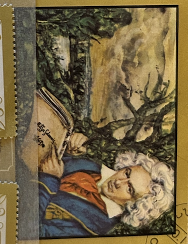
| SOURCE | TITLE| IMAGE MATCH | click to source page |
| Etsy | Vintage State of Oman Postage Stamps Featuring 5 Different L. V. Beethoven Pictures - Etsy | 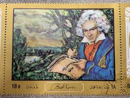 |
| Higher Grounds Coffee Shoppe | Remer MN | 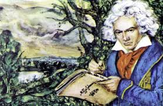 | |
| Todocolección | oman - valor facial 18 b - l. v. beethoven - co - Buy Stamps from other Asian countries on todocoleccion | 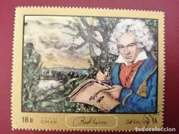 |
| torob.com | خرید و قیمت تمبر بتهوون سایز بزرگ بدون چسب برنگ آب طلایی | ترب | 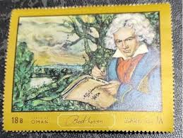 |
| helpster.de | Seltene Faschingskostüme - so gelingt die Maskerade als Beethoven | 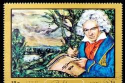 |
| Dreamstime.com | 102 Mozart Painting Stock Photos - Free & Royalty-Free Stock Photos from Dreamstime | 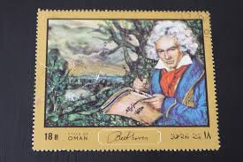 |
| Bilibili | 第5號交響曲貝多芬-哔哩哔哩_Bilibili | 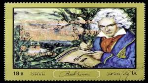 |
| eBay | Vtg Porcelain DRESSER/POWDER/JEWELRY BOX w/Courting Couple Germany/Limoge Style | eBay | 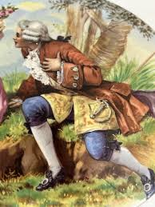 |
| TOCANA | Latest News Articles About 髪の毛 Roundup | TOCANA | 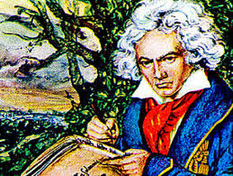 |
| All magazines | Call of the wild - 20 Mar 2025 - BBC Music Magazine - Readly | 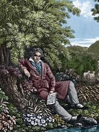 |
| Weebly | Scientific Revolution - World History Learning Center | 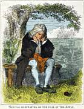 |
| Amazon.com | Amazon.com: Wir Entdecken Komponisten: CDs y Vinilo | 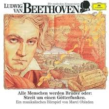 |
| Etsy | Vintage "heidi" Book, 1945 Junior Library Edition, Illustrated by William Sharp - Etsy | 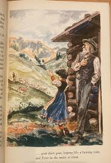 |
| Posterazzi | Samuel Langhorne Clemens, /N'Mark Twain' (1835-1910). American Writer. 'The Author And His Memories,' Colored Engraving, 1880. Poster Print by Granger Collection - Item # VARGRC0008491 - Posterazzi | 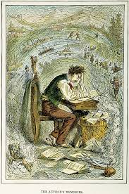 |
| COMC (Check Out My Cards) | 2009 Topps Allen & Ginter's - [Base] #83 - Ludwig Van Beethoven | 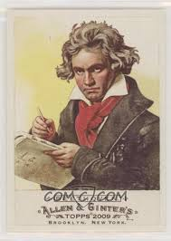 |
| Artsy | Bradley Theodore | SYMPHONY OF BEETHOVEN (2018) | Artsy | 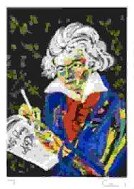 |
| erikkaisson.com | astronaughty — ERIK KAISSON | 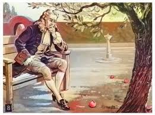 |
| Pleyel Ensemble (@pleyelensemble) • Facebook | 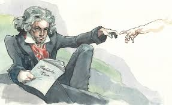 | |
| Daily Mail | How the Sycamore Gap Tree could rise again: Scientists claim they have the technology to grow an IDENTICAL copy of the felled tree at Hadrian's Wall | Daily Mail Online | 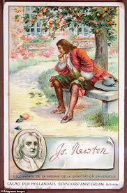 |
| eBay UK | OBLADEN/QUADFLIEG/KARAJAN/BP/+ - BEETHOVEN 2: ALLE MENSCH CD NEW | eBay UK | 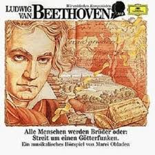 |
| WordPress.com | The Ultimate Guide to Sir Isaac Newton Trading Cards – Cardboard Isaac | 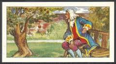 |
| Alamy | Beethoven. Museum: Musée Bourdelle, Paris. Author: ANTOINE BOURDELLE Stock Photo - Alamy | 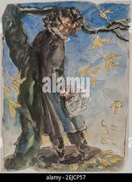 |
| PicClick | Thomas Wooden Spencer FOR SALE! - PicClick | 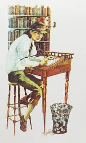 |
| Beethoven-Haus Bonn | In the open air | 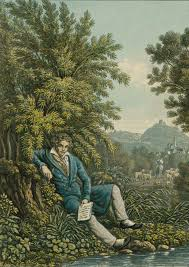 |
| CHARLES AGVENT | THE SIR ROGER DE COVERLEY PAPERS FROM THE SPECTATOR, LONDON: 1711-1712 | Joseph ADDISON, Richard STEELE, Eustace BUDGELL | 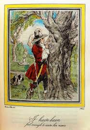 |
| leilaviss.com | Episode 25: Composer Cards — Leila Viss, 88PK | 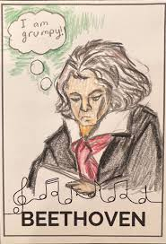 |
| Free stamp catalogue | Stamp 1972, Ras al-Khaimah Beethoven s/s, 1972 - Collecting Stamps - Freestampcatalogue.com - The free online stampcatalogue with over 500.000 stamps listed. | 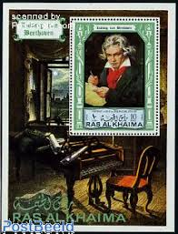 |
| Wikidata | Henry Poulet - Wikidata | 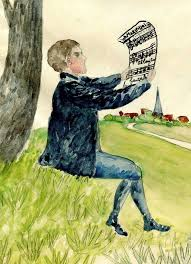 |
| AbeBooks | Ex Libris M. P. De Haas - Van Riemsdijk. Nachdenklich Sitzender. by Bekker, David (1940-2022):: Gut Farbige Radierung. (2001) | Antiquariat Braun | 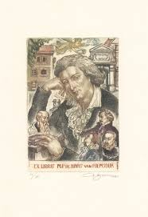 |
| Fanatics Collect | 1908 Stollwerck Album 10 Ludwig Van Beethoven #6 CGC 4 VGEX on Fanatics Collect | 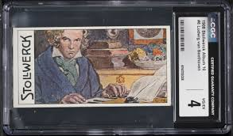 |
| Calle.es | Inverfin Avenida Quinta en | 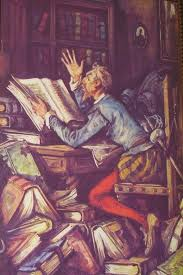 |
| sciencephotogallery.com | Isaac Newton Posters by Science Photo Library | 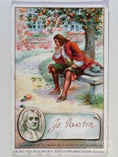 |
| Oratorios from the Classical period** (roughly 1750–1820) that exhibit such clear influence of the **Baroque tradition** ( in their musical language, structure, and expressive aims ) **They could easily be mistaken | ||
| Arthur Hunter-Blair | Arthur Hunter-Blair Art | 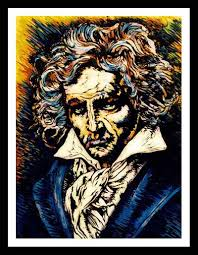 |
| Linkfire | My First Beethoven Album | |
| Shutterstock | English Physicist Isaac Newton 1642-1727 Apple Editorial Stock Photo - Stock Image | Shutterstock Editorial | 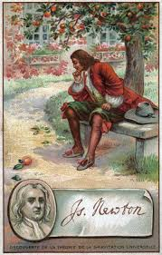 |
| Amazon.de | The Poster Corp Ludwig Van Beethoven/N(1770-1827). English Composer. Oil 1819-1820 by Joseph Carl Stieler. Art Print 18" x 24" : Amazon.de: Home & Kitchen | 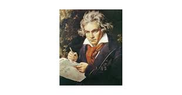 |
| Hello, My name is Paulo Santaliestra, I am a Brazilian illustrator with more than 5 years of experience. I currently work illustrating literary children's books and publishing, but I have also worked | 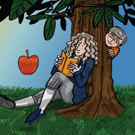 | |
| Prospero's Isle | Solitude" and other previously untranslated stories by Guy de Maupassant - Prospero's Isle | 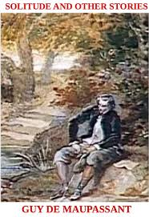 |
| eBay | Set of 5 psc Soviet Vinyl Records - Ludwig van Beethoven, Emil Gilels LP Melodia | eBay | 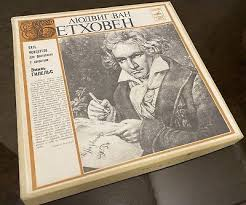 |
| Alamy | Ludwig van beethoven hi-res stock photography and images - Page 9 - Alamy | 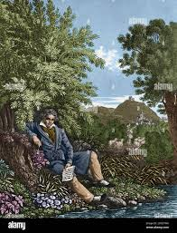 |
| GetArchive | 35 Artwork in wochenspruch der nsdap, Nsdap Images: PICRYL - Public Domain Media Search Engine Public Domain Search | 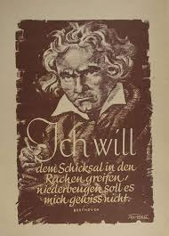 |
| Chris Wolak | Autobiography of Benjamin Franklin • Stay Curious · Chris Wolak | 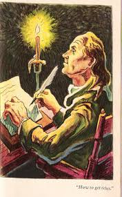 |
| X | David King (@SocialHistorian) / Posts / X | 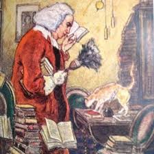 |
| PAGE TURNERS: A Literary Fighter — DAY 3. The Ingenious Gentleman of La Mancha and the Impaler of Transylvania join the library! It's Don Quixote & Dracula! Who should our first fighter | 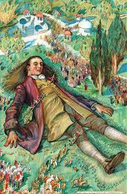 | |
| Gerda Ploug Sarp | 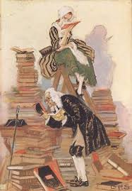 | |
| Biblio AU | A CHRISTMAS CAROL IN PROSE by Dickens, Charles | 1934 | Limited Editions Club | Biblio AU | 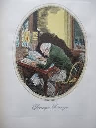 |
| PX Canvas Prints | Mark Twain Writing The Innocents Abroad, First Published 1869 Canvas Print by American School - PX Canvas Prints | 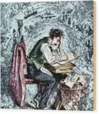 |
| Bridgeman Images | Image of STEPHEN H. MEEK (1805-1889) American fur trapper, mountaineer and author. | 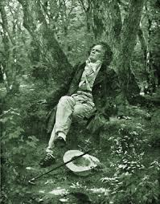 |
| AbeBooks | CANDIDE or OPTIMISM by Francois Marie Arouet Voltaire / translated from French Richard Aldington - illust.by Sylvain Sauvage / intro by Paul Morand: As New Hardcover (1977) 1st Edition | ODDS & ENDS BOOKS | 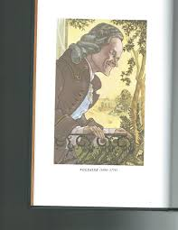 |
| PICRYL | Bilder ABC 1788 TZ - PICRYL - Public Domain Media Search Engine Public Domain Search | 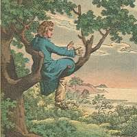 |
| 30 Beethoven ideas | beethoven, classical music, music composers | ||
| eBay | Ein Vöglein sang im Lindenbaum - Liedkarte 1901 (JK-40) | eBay | |
| Coaching Institute for Personal and Professional Development | ||
| marianskelazne.cz | Writers' Trail :: Mariánské Lázně | |
| marianskelazne.cz | Johann Wolfgang von Goethe :: Mariánské Lázně | |
| Invaluable.com | Antonio Canella Artwork for Sale at Online Auction | Antonio Canella Biography & Info | |
| lvbeethoven.fr | Cards: playing cards and others - Ludwig van Beethoven's website - Dominique PRÉVOT | |
| Alamy | Franz Schubert's 'Liebesbotschaft (Love's Message) Picture and bars of song. Pensive man pictured in forest by river. Austrian composer, 1797-1828 Stock Photo - Alamy | |
| Media Storehouse | Ludwig Van Beethoven Improvising at the Piano Print. Art Prints, Posters & Puzzles from Mary Evans |